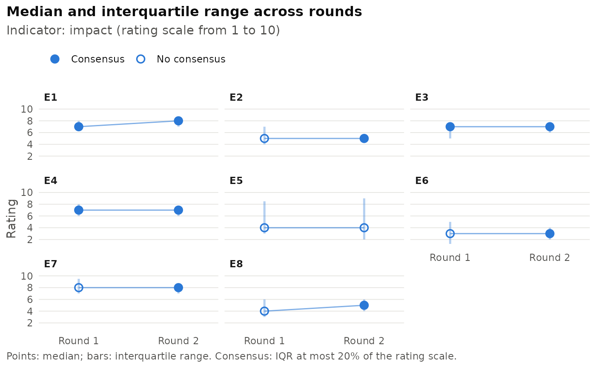

Shows, for each item, the median rating (point) and the interquartile
range (vertical bar, from the first to the third quartile) in every
round. Filled points mark the rounds in which the item reaches consensus
under the rule of delphi_consensus(); hollow points mark the rounds in
which it does not.
Usage
delphi_plot_trend(
x,
indicator = NULL,
items = NULL,
ncol = NULL,
threshold = 0.2,
relative_to = c("points", "range"),
type = 7
)Arguments
- x
A
delphi_dataobject.- indicator
Indicator to plot. If
NULL, the first indicator is used.- items
Optional subset of items.
- ncol
Number of columns of the panel grid.
- threshold, relative_to
Consensus rule, see
delphi_consensus().- type
Quantile algorithm; see
delphi_describe().
Examples
x <- delphi_data(delphi_example, expert_col = "expert",
round_col = "round", indicator_col = "indicator",
scale = list(impact = c(1, 10), plausibility = c(1, 100)))
delphi_plot_trend(x, indicator = "impact")
